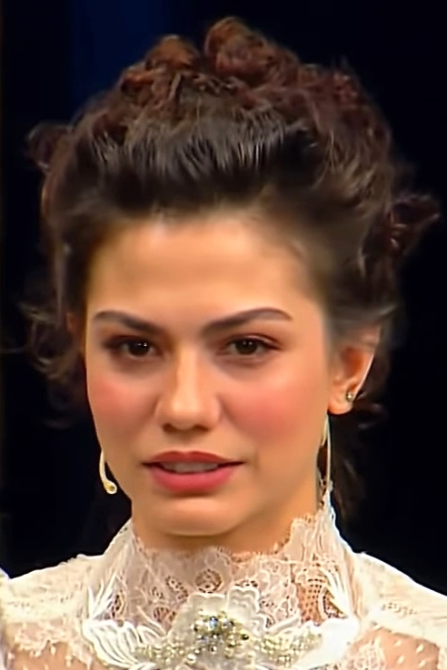

Demet Özdemir Biography: Age, Career, Movies, TV Shows and Personal Life
She started out as a teenage backup dancer, worked her way through Turkish television one romantic comedy at a time, and became one of the most recognisable faces of the Turkish drama boom — in Italy, Spain and Latin America as much as at home.


Key takeaways
- Demet Özdemir, born 26 February 1992 in İzmit, Turkey, is a former dancer who became a leading actress in Turkish television.
- Her breakthrough was Erkenci Kuş (2018–2019) as Sanem Aydın, opposite Can Yaman — the role that made her famous in Italy, Spain and Latin America.
- She has since moved into drama (Doğduğun Ev Kaderindir, Adım Farah) and streaming (Netflix’s Love Tactics, Disney+’s Dünyayla Benim Aramda).
- Her latest series is Eşref Rüya (2025–2026), in which she plays the singer Nisan — and sings in the role.
- Her net worth is only an estimate — $1 million–$5 million — and she has been divorced since May 2023.
| Full name | Demet Özdemir |
| Born | 26 February 1992, İzmit, Kocaeli, Turkey |
| Age | 34 years old (in 2026) |
| Height | 1.70 m (5 ft 7 in) — as listed in her biographies |
| Nationality | Turkish |
| Profession | Actress, former dancer |
| Years active | 2013 – present |
| Education | Acting studies at Şahika Tekand Studio (2011–2013) |
| Best known for | Erkenci Kuş (Daydreamer), Doğduğun Ev Kaderindir, Adım Farah, Eşref Rüya |
| Net worth | Estimated at $1 million – $5 million (see the net worth section below — no audited figure exists) |
| Marital status | Divorced (married Oğuzhan Koç 2022–2023); not remarried as of 2026 |
Who Is Demet Özdemir?
Demet Özdemir is a Turkish actress and former dancer who became one of the faces of the international rise of Turkish television drama. She is best known around the world as Sanem Aydın, the daydreaming young woman at the centre of the romantic comedy Erkenci Kuş (known in English as Daydreamer) — a series that travelled from Turkey to Italy, Spain, Latin America and the United States and helped turn its two leads into stars far beyond their home country.
What makes her career unusual is how deliberately she has rebuilt it since that breakthrough. Instead of repeating the same romantic comedy role, she moved into serious drama, then into streaming films and series, and most recently into a prime-time role that also asks her to sing. She is, in that sense, the opposite of a one-role star: the dancer who learned to act, and the comedy lead who learned to carry a drama.
Demet Özdemir Age, Height and Early Life
Demet Özdemir was born on 26 February 1992 in İzmit, Kocaeli, Turkey, which makes her 34 years old in 2026. She is the youngest of three children in a family of Bulgarian Turkish descent. After her parents separated, she moved to Istanbul with her mother and her siblings, and it was in Istanbul that her working life began — not on a film set, but on a dance floor.
She is listed at 1.70 metres tall (5 ft 7 in). She started dancing while still a teenager, working to support her family while she continued her studies, and she took her first steps in entertainment as a dancer rather than as an actress.
From Dancer to Actress
Özdemir began her career as a dancer at the age of 16. She worked as a backup dancer for the singer Bengü, joined the dance group Efes Kızları, and appeared in music videos — for Mustafa Sandal’s “Ateş Et ve Unut” and Bengü’s “Hodri Meydan”. Dance gave her stage confidence and screen presence, but she wanted to act, so between 2011 and 2013 she studied acting at the Şahika Tekand Studio in Istanbul.
Her acting debut came in 2013 in the fantasy series Sana Bir Sır Vereceğim, where she played Aylin. A supporting role followed in the historical drama Kurt Seyit ve Şura (2014), and her first film role in Tut Sözünü (2015). Her first leading role arrived the same year, in the romantic comedy Çilek Kokusu (2015), and she consolidated it with No: 309 (2016–2017), a long-running romantic comedy that ran for 65 episodes. Step by step, she had gone from the dance troupe to the top of the cast list.
Erkenci Kuş — the Breakthrough
The turning point came in 2018 with Erkenci Kuş. Playing Sanem Aydın, a young woman from an Istanbul neighbourhood who dreams of becoming a writer and works in her father’s grocery shop, opposite Can Yaman as Can Divit, Özdemir became a star far beyond Turkey. The series ran from 2018 to 2019 for 51 episodes and was broadcast internationally, becoming one of the Turkish dramas that carried the genre to new audiences around the world.
The show’s reach was remarkable. In Italy it aired daily on the national broadcaster Canale 5 and was later moved into prime-time slots after its success. In the United States it became the first Turkish romantic comedy broadcast by UniMás, and in Brazil it stood out as one of Globoplay’s most popular Turkish productions. Her performance earned her the Golden Butterfly Award for Best Actress in a Romantic Comedy in 2018 and the Murex d’Or for Best International Actress in 2019 — and the Özdemir–Yaman pairing became one of the most searched Turkish screen couples of recent years.

.jpg){kind=link}
After Erkenci Kuş — Drama and Streaming
After Erkenci Kuş, Özdemir deliberately changed direction. From 2019 to 2021 she played the lead role of Zeynep in the drama Doğduğun Ev Kaderindir (My Home, My Destiny), a series inspired by a novel by Gülseren Budayıcıoğlu and based on a true story. The series was licensed in more than 90 countries and later became available on streaming platforms including HBO Max — proof that her audience followed her from comedy into drama.
She then moved into streaming. In 2022 she starred in the Netflix romantic comedy film Love Tactics (Aşk Taktikleri) as Aslı, opposite Şükrü Özyıldız, followed by the sequel Love Tactics 2 in 2023, and appeared in the Disney+ drama series Dünyayla Benim Aramda (Between the World and Us) as İlkin. In 2023 she took the title role of Farah in Adım Farah, opposite Engin Akyürek — an adaptation of the Argentinian series La Chica Que Limpia — a performance that earned her the 2025 PRODU Award for Best Actress in a Contemporary Non-Spanish Language Telenovela. She also won the Türkiye Youth Award for Best Female TV Actor in 2019. Along the way she collected further international honours, including the Kinéo Award for Best International Actress at the Venice Film Festival in 2023 and an honorary Best International Actress award at the DIAFA festival in 2024.
Awards and Recognition
Her awards, in one place: Golden Butterfly Award for Best Actress in a Romantic Comedy Series (Erkenci Kuş, 2018); Murex d’Or for Best International Actress (2019); Türkiye Youth Awards for Best Female TV Actor (2019); Kinéo Award for Best International Actress at the Venice Film Festival (2023); DIAFA honorary Best International Actress (2024); and the PRODU Award for Best Actress in a Contemporary Non-Spanish Language Telenovela (Adım Farah, 2025).
Eşref Rüya and Music (2025–2026)
Since March 2025, Özdemir has played the lead character Nisan Akyol in the Kanal D series Eşref Rüya, opposite Çağatay Ulusoy as Eşref. Nisan is a singer who performs at a hotel run by Eşref — and because the role is a singer, Özdemir has performed songs in the series herself, including “Aşiyan”. The series ran for 47 episodes and ended on 10 June 2026, bringing her back to mass prime-time television after her streaming years.
The role also opened a new direction: music. She released the single “Ah Yar” in September 2025 and “Gözü Kara” in January 2026, both performed as part of the Eşref Rüya soundtrack, and in 2026 she recorded a cover of “Kime Zarar” for a tribute project celebrating songwriters Eda and Metin Özülkü’s 50th anniversary in music. Her film work has continued alongside television: she appeared as Ceren in Djinn Wedding (Cinlerin Düğünü), directed by Ferit Karahan, which was selected for the Platform Competition at the Toronto International Film Festival in 2026.
Demet Özdemir Net Worth 2026
Demet Özdemir’s net worth is estimated at between $1 million and $5 million. That range is the honest answer, and it needs explaining. No audited figure for her wealth exists — she has never published her finances, and no Forbes-style valuation of a Turkish television actress is available. Different biography and celebrity-finance sites publish very different numbers: most cluster around $4–5 million, while some put the figure as low as $1 million and a few thin biography blogs claim $10–12 million without showing how they reached it.
What is clear is where the money comes from: leading-role fees from Turkish television, film and streaming productions, brand endorsements and modelling work. She was a Pantene Turkey brand ambassador from 2019 to 2024, has fronted campaigns for Garnier and Disney+ Türkiye, and has been the face of brands including ETİ Browni Intense and Trendyolmilla. She has also appeared in international magazines such as Elle and Madame Arabia. A star who can work across television, film, streaming and advertising — in Turkey and internationally — commands more than a star who can work in one medium alone. See our Disclaimer: net-worth figures on this site are estimates, not official figures.
Demet Özdemir Husband and Personal Life
Demet Özdemir is not married as of 2026, and she has no husband. On 28 August 2022 she married the musician and actor Oğuzhan Koç. The marriage was short: in April 2023 the couple announced they were separating, and they divorced on 8 May 2023, after about eight months of marriage. She has not remarried since, and she has no children.
Beyond that, she keeps her private life largely out of the headlines. Reports linking her to other people have not been confirmed by her, and this article does not repeat unconfirmed rumours as fact. One part of her public life she does talk about openly is charity: following the 2023 Turkey–Syria earthquakes, she took part in aid initiatives supporting earthquake victims, and she has also supported education and women’s self-confidence campaigns in Turkey.
Demet Özdemir Movies and TV Shows (Full List)
| Year | Title | Role / Notes |
|---|---|---|
| 2013–2014 | Sana Bir Sır Vereceğim | Aylin — television debut; lead role (29 episodes) |
| 2014 | Kurt Seyit ve Şura | Alya — supporting role (21 episodes) |
| 2015 | Tut Sözünü | Demet — film; lead role |
| 2015 | Çilek Kokusu | Aslı — first leading TV role (23 episodes) |
| 2016–2017 | No: 309 | Lale — lead role (65 episodes) |
| 2017 | Sen Kiminle Dans Ediyorsun | Aysel — film; lead role |
| 2018–2019 | Erkenci Kuş (Daydreamer) | Sanem — breakthrough; Golden Butterfly Award 2018; Murex d’Or 2019 |
| 2019–2021 | Doğduğun Ev Kaderindir | Zeynep — lead role (43 episodes); licensed in 90+ countries |
| 2022 | Love Tactics (Aşk Taktikleri) | Aslı — Netflix film |
| 2022 | Dünyayla Benim Aramda | İlkin — Disney+ series; lead role |
| 2023 | Love Tactics 2 (Aşk Taktikleri 2) | Aslı — Netflix sequel |
| 2023 | Adım Farah | Farah — lead role (27 episodes); PRODU Award 2025 |
| 2025–2026 | Eşref Rüya | Nisan — lead role (47 episodes); Kanal D |
| 2026 | Djinn Wedding (Cinlerin Düğünü) | Ceren — film; TIFF Platform Competition 2026 |
Özdemir has also appeared as a guest on Turkish television and stage shows, including Tolgshow (2018) and Çok Güzel Hareketler 2 (2021), and she began her career in music videos and commercials, including a Pegasus Airlines campaign in 2012. Her work so far is overwhelmingly in television — the medium that made her — with film and streaming added in recent years.
FAQs
How old is Demet Özdemir?
Demet Özdemir was born on 26 February 1992 in İzmit, Kocaeli, Turkey, so she is 34 years old in 2026.
What is Demet Özdemir's net worth?
Her net worth is estimated at $1 million–$5 million, based on the range published by biography and celebrity-finance sites, most of which cluster around $4–5 million. No audited figure exists, so any precise number should be treated as an estimate, not a fact.
Is Demet Özdemir married?
No. She was married to musician and actor Oğuzhan Koç from August 2022 until their divorce on 8 May 2023. She has not remarried as of 2026.
What is Demet Özdemir's latest series?
Her latest series is Eşref Rüya (2025–2026), in which she plays the singer Nisan Akyol opposite Çağatay Ulusoy. The series ran for 47 episodes on Kanal D and ended on 10 June 2026.
What was Demet Özdemir's breakthrough role?
Her breakthrough was Sanem Aydın in Erkenci Kuş (2018–2019), opposite Can Yaman. The series was sold internationally and made her famous in Italy, Spain, Latin America and the United States.
Who was Demet Özdemir's co-star in Erkenci Kuş?
Her co-star was Can Yaman, who played Can Divit. The pair won best-couple awards for the series and remain one of the most searched Turkish screen couples. Read his biography on Stars of Europe.
Sources
Facts in this article were checked against: Hassan's sources — MF Yapım official profile, MF Yapım English biography and IMDb filmography — plus Wikipedia — Demet Özdemir (birth date, dance career, filmography, awards, marriage and divorce dates, Eşref Rüya and music releases) and Oğuzhan Koç (divorce date, 8 May 2023); iFANN, TurkSeries, TheTVJunkies and CelebzBiography (net worth estimates); and diziplanet (height, filmography, photo credit). All writing is original to Stars of Europe.